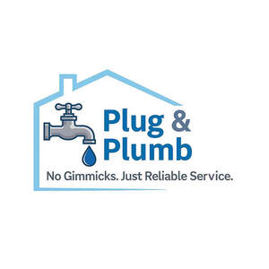

Trade Mark Journal No.2025/035 29 August 2025
UK00004250490 17 August 2025 (37)

- Class 37
- Plumbing; Installation of plumbing; Plumbing services; Renovation of plumbing; Maintenance of plumbing; Plumbing and gas and water installation; Plumbing and glazing services; Plumbing installation, maintenance and repair; Plumbing repair advisory services; Services of electricians; Boiler cleaning and repair; Installation of plumbing systems; Electrical contractor services; Plumbing installation advisory services; Heating contractor services; Services for the repair of pipes; Boiler repair services; Advisory services relating to the repair of plumbing; Installation of water pipes; Plumbing maintenance advisory services; Boiler cleaning services; Repair of bathtubs; Pipe installation services; Advisory services relating to the installation of plumbing; Renovation of electrical wiring; Electrical wiring services; Installation of electrical earthing; Renovation, repair and maintenance of electrical wiring; Repair of electrical equipment; Electrical installation services; Carpentry; Electric appliance installation and repair; Electric appliance installation ; Electric appliance repair; Repair services for domestic electrical appliances; Painting contractor services; Plastering contractor services; Maintenance and repair of electrical earthing systems; Cleaning of water supply plumbing; Cleaning of water supply pipework; Advisory services relating to the maintenance of plumbing; Maintenance, servicing and repair of household and kitchen appliances; Repair or maintenance of gas water heaters; HVAC (Heating, ventilation and air conditioning) installation, maintenance and repair; Maintenance and repair of gas and electricity installations; Repair of sanitary installations; Heating equipment installation and repair; Installation and repair of heating equipment; Repair of water supply installations; Maintaining and repair of drain pipes; Insulation of pipes; Repair of household and kitchen appliances; Renovating services relating to conduits for water supply; Advice relating to preventing blockages in plumbing lines; Maintenance and repair of heating installations; Installation of pipework systems; Installation of fixtures and fittings for domestic premises; Installation, repair and maintenance of heating equipment; Beneath ground construction work relating to plumbing; Heating equipment repair; Installation of pipe insulation; Installation of gas pipelines; Installation of gas and water pipelines; Tiling services; Repair of tiles; Plastering; Carpentry services; Joinery services [repair of woodwork]; Joinery [repair]; Repair of kitchen furniture; Painting and decorating services; Restoration of bathroom fittings; Repair of toilet bowls with integrated bidet water jets; Installation of kitchen cabinets; Installation of kitchen appliances; Installation of laundry and kitchen equipment; Kitchen equipment installation; Installation of kitchen equipment; Installation of boilers; Cleaning of boilers; Installation, repair and maintenance of boiler tubes; Repair or maintenance of boilers; Maintenance and repair of solid fuel boilers; Installation, repair and maintenance of steam condensers; Cleaning of water tanks; Cleaning of water cylinders; Drainage services; Installation of rainwater drainage systems; Cleaning of drains; Unblocking of drains; Installation of rain gutters; Cleaning of drains by high pressure water jetting; Services for the installation of drains; Construction of water supply installations; Mechanic services; Telephone installation and repair; Building maintenance and repair services provided by a handyman; Drain cleaning services; Services for the repair of drains; Pump repair; Repair of electrical equipment and electrotechnical installations; Installation of electrical grounding; Telecommunication wiring; Cleaning of electrical motors.
James Kalarus